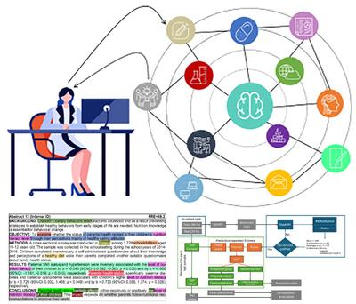

Enriched conversational XAI methods for healthcare
In this project, we aim to use Explainable Artificial Intelligence to enable end-users to explain and justify the predictions and recommendations obtained. In doing so, we will focus primarily on more general, broad, and flexible explanations.
More information: here.

Meet the Team
Principal Investigator
Gregor Štiglic
Professor and Head of Research Institute
Researchers
Lucija Gosak
PhD Student
Leon Kopitar
PhD student
Nino Fijačko
PhD Student
Primož Kocbek
PhD Student
Kasandra Musović
PhD Student
Mateja Lorber
Dean of Faculty of Health Sciences, Associate Professor
Recent Publication
Contact
- gregor.stiglic@um.si
- +386 2 300 47 31
-
Zitna ulica 15
2000 Maribor - Enter main entrance and take the stairs to Office 113 on Floor 1